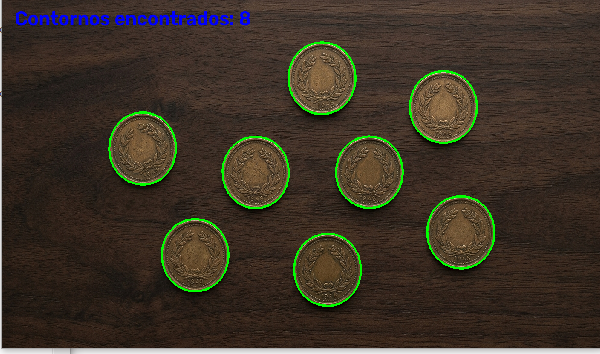
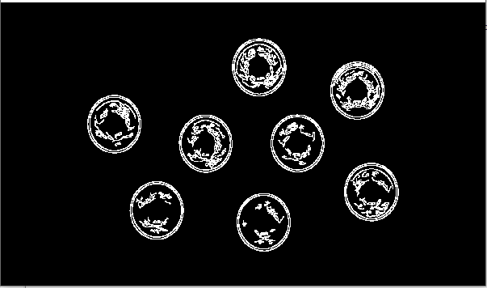
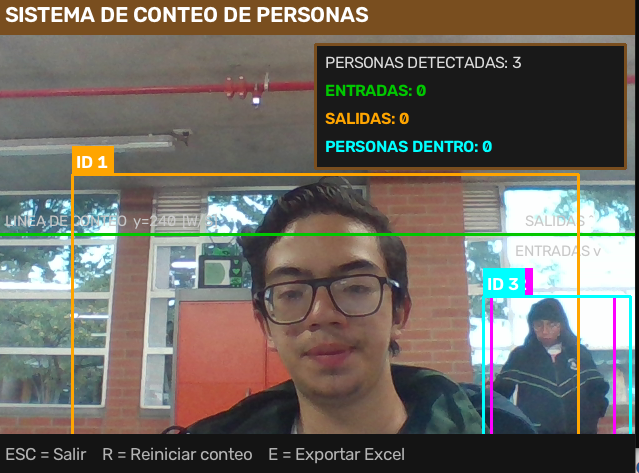
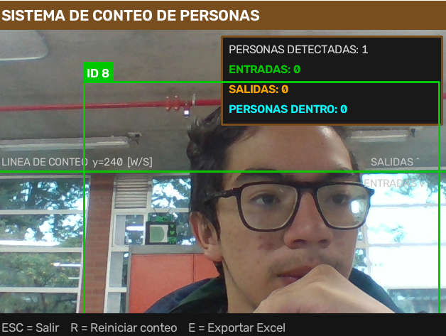
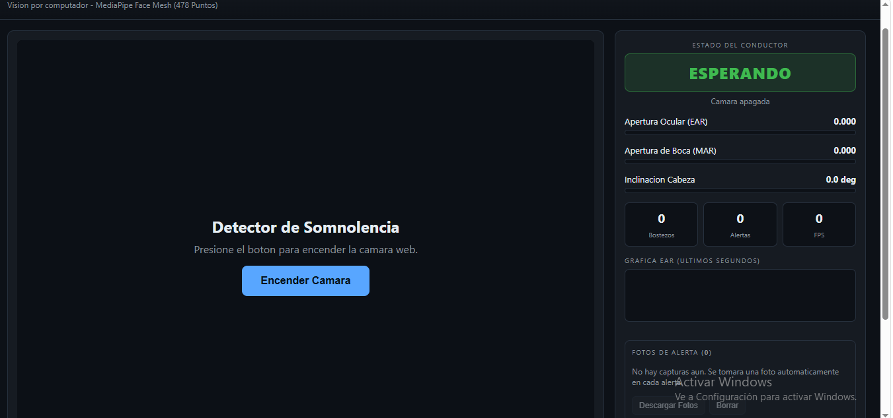
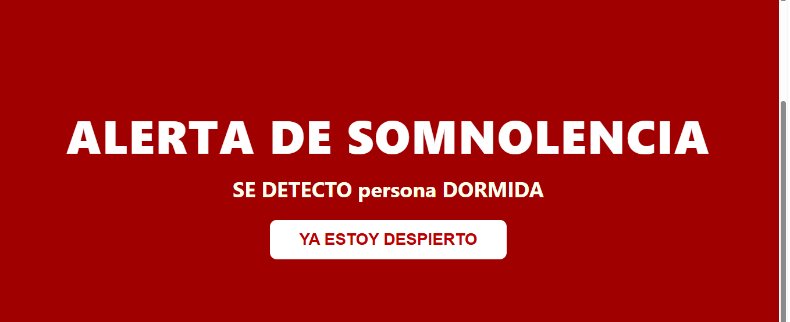
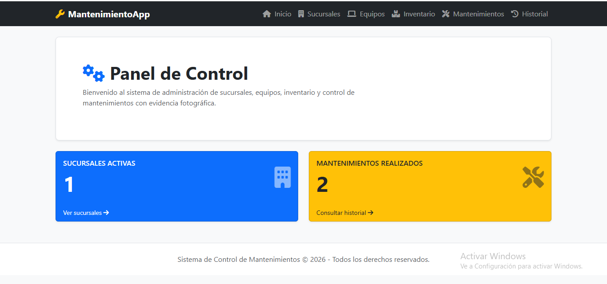
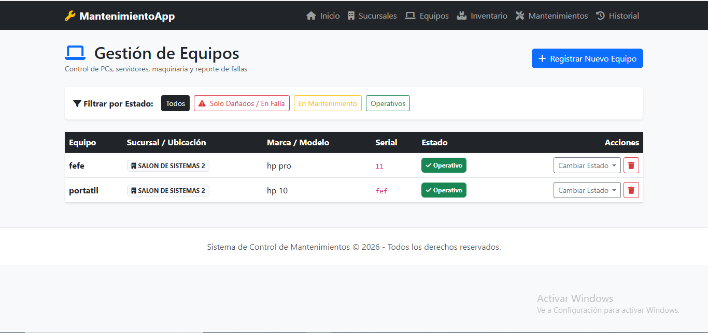

1. Conteo y Extracción con Canny
Desarrollado en Python 3.11. El programa captura una fotografía y, mediante el algoritmo de Canny, detecta los bordes de los objetos presentes en la imagen para realizar un conteo automático.


2. Conteo de Personas
Sistema en html que detecta personas en tiempo real, dibuja un cuadro delimitador (bounding box) alrededor de cada una y muestra el conteo total en pantalla. No registra ni almacena datos, únicamente cuenta.


3. Detector de Somnolencia
Sistema en HTML que detecta el rostro del usuario y se calibra. Al notar somnolencia, primero muestra un mensaje de advertencia y, un segundo después, activa una alarma sonora estridente. Al dispararse la alarma, el programa captura una fotografía como evidencia.


4. Detector de Celular
Sistema en HTML con funcionamiento similar al detector de somnolencia. La alarma se activa cuando la persona agacha la cabeza o se detecta un teléfono celular en la imagen de la cámara. Al sonar la alarma, se toma una fotografía automáticamente.


5. Centro de Monitoreo en Celular
Sistema en HTML basado en el detector de celular, pero en lugar de emitir la alarma en la computadora local, la cámara queda conectada a un celular u otro equipo remoto, funcionando como un sistema de cámaras de vigilancia en red.


6. Gestión de Mantenimientos e Inventarios
Sistema en HTML para el control de mantenimientos en múltiples sucursales. Permite registrar sucursales, equipos instalados, historial de trabajos (fecha, persona encargada, materiales, observaciones), evidencias fotográficas asociadas a cada mantenimiento, e inventario independiente por sucursal con actualización automática de stock al utilizar materiales. Incluye buscadores y consultas organizadas para evitar duplicaciones.

